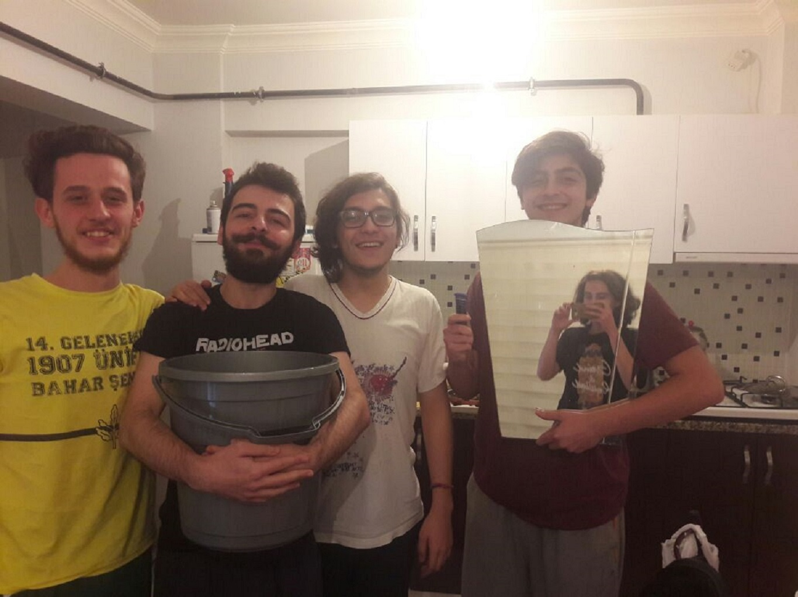
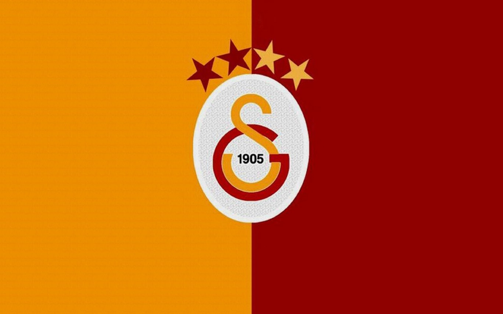
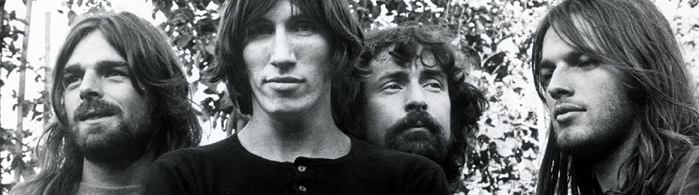

BİYOGRAFİ
Benim adım Mustafa Kuşoğlu, 24 Kasım 1997 günü Kocaeli'nin Gebze ilçesinde doğdum.20 yaşındayım.Annemin adı Saliha,babamın adı ise Mehmet'tir.Annem Yozgat'ta babam ise Muş'ta doğdu.Bir abim ve bir ablam var.Abimin adı Canberk ablamın adı ise Ayşe'dir.Hayatım boyunca Gebze'de ailemle yaşadım.Evimiz oldukça kalabalıktı.Bababannem ve halam da bizle yaşıyordu.Halam ben küçükken evlenince evmimizden ayrıldı.Annem de babam da Çerkes'dir.Türk ve Çerkes adetlerinin karşımıyla büyüdüğüm söylenebilir.En sevdiğim de bir Çerkes yemeği olan fıccındır.Anaokula hiç gitmedim.
Okul hayatıma Gebze Dumlupınar ilköğretim Okulu'nda başladım.Liseyi ise Gebze Anadolu Lisesi'nde okudum.Abim ve ablamdan farklı olarak ailede sayısal alana yönelmeyi seçen ilk ben oldum.Lise bitince üniversiteye istediğim puanı alamadığım için gitmedim ve bir sene daha üniversite sınavlarına hazırlandım.Açıkçası ondan da istediğim puanı alamadım.Aslında ben fizyoterapi okumak istesemde puanımın yetersizliği ve özel okulların masraflarının aileme sıkıntı olmaması için bu kararımdan vazgeçtim.Sağlık alanında başka bölüm istemediğimden ve kendime ikinci olarak yakınlık gördüğüm bilgisayar mühendisliği bölüme karar verdim ve bu alanda tercih yaptım.Sonuç olarak Sakarya Üniversitesi Bilgisayar Mühendisliği bölümünü kazandım.İlk senemde kendi tercihimle İngilizce eğitimi almaya karar verdim ve geçen senemi İngilizce öğrenmeye ayırdım.
Hobiler,Zevkler,İlgi Duyduklarım
Hobilerime,ilgilendiğim spor dallarına ve zevklerime gelecek olursak futbolu severim.Oynamaktan çok izlemeyi severim.Galatasaraylıyım ayrıca doğduğum yerim takımı olan Gebzespor'u da takip ederim. Genel olarak zevklerimden bahsetmem gerekirse çoğunlukla bir favori film,renk,kitap vb. seçememişimdir. Kitap okumayı severim, kitap okuma alışkanlığım Patrick Suskind'in Koku adlı romanı başladı. Dediğim favori bir etkinlik ya da film seçemeyen birisiyim. Bunlar benim için sürekli değişen şeylerdir.
Pink Floyd
Konu müziğe gelince iş farklıdır. Müzikte favorim vardır. O da Pink Floyd'dur.Eğer benden bahsediceksek bu gruba ayrı bir yer açılmalıdır. Sadece şarkılarıyla değil yaptıklarıyla,davranışları ve duruşlarıyla her zaman benim için ayrı bir yerde oldular. Kendileri beni ben yapan şeylerdendir. Bana katkıları çok fazladır. Zaten yaptıkları müzik bunu yapmak ister. İnsanlara bir şeyler katmak. Size yaşattığı ruhsal deneyimden sonra onları sevmemek elde değildir. Bunu komik bulabilirsiniz ama başka Pink Floyd hayranları da buna katılır Pink Floyd bir yaşam stilidir. Roger Waters favori grup elemanımdır.